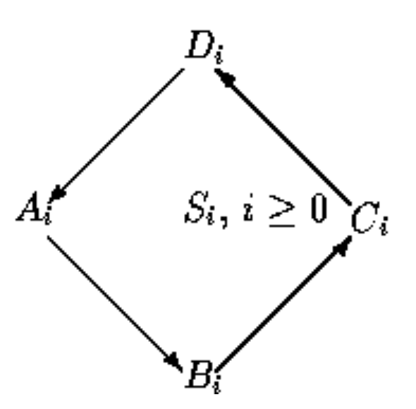
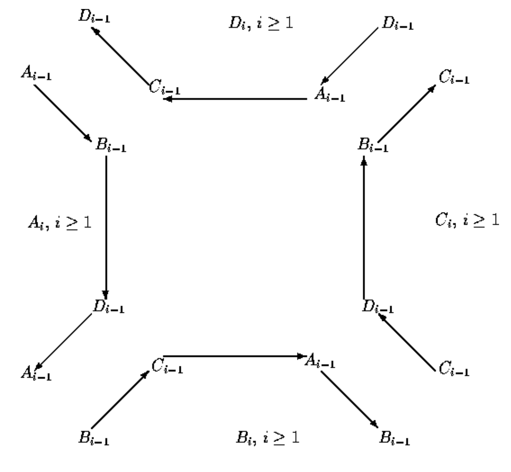

Programming Assignment 5 (Sierpinski) This assignments deals with recursive fractals/curves that will be produced by you using the graphics.py package that we used in Assignment 1. Recall that the documentation for this package is available at
graphics.html (or graphics.pdf - this contains Image object).
Part 1: SIERPINSKI TRIANGLES
Sierpinski triangles may be constructed from an equilateral triangle by repeated removal of triangular subsets as follows:- Start with an equilateral triangle.
- Subdivide it into four smaller congruent equilateral triangles and remove the central triangle.
- Repeat step 2 with each of the remaining smaller triangles infinitely.
$ python3 sTriangles.py 3should draw the Sierpinski triangles for depth 3. You must also use a coloring scheme that uses three colors to fill the triangles every three iterations. The following are examples of output of the program for various depths.
{kind=link}
{kind=link}
{kind=link}
{kind=link}
{kind=link}
{kind=link}
The user should be able to "click" on the canvas to terminate the program.
Part 2: SIERPINSKI CURVES
Sierpinski Curves come in various sizes starting at size 0. We shall denote Seirpinski curve of size i as Si. Sierpinski curve Si is defined in terms of four other curves: A-curves, B-curves, C-curves, and D-curves, each of which also comes in various sizes starting at size 0. A0, B0, C0, and D0 are empty curves (i.e. occupy no space on the canvas). The rest of the curves are defined recursively as follows: 
As can be noticed, Si is defined in terms of Ai, Bi, Ci, and Di, whereas Ai, Bi, Ci, and Di are defined in terms of each other mutually recursively (to make the definition work, curves of size i are defined in terms of curves of size i-1 with a base case of size 0).
Write a recursive Python program, sCurves.py, that takes as command line input the size of the Sierpinski curve, to "draw" the Sierpinski curve of that size on a canvas.
$ python3 sCurves.py 3should draw the Sierpinski curve of size 3. The user should be able to "click" on the canvas to terminate the program.
Some Sierpinski curves are shown below:
{kind=link}
{kind=link}
{kind=link}
{kind=link}
{kind=link}
Notes on implementation:
- You may choose appropriate segment lengths. It appears that the horizontal and vertical segments are a bit longer than the other segments. Please use simple geometry/math to keep the proportions of the horizontal/vertical segments vs other segments appropriate.
- Since the entire Sierpinski curve is a "closed" figure, you must "fill" the figure with a color different than the background color.
- Begin drawing the Sierpinski curves by starting to draw its A-curve somewhere in the top left corner of the display. Make sure to leave some space to the left and top of the starting point so that the curve does not go outside the display area.
- It will be useful if you write procedures for drawing the various segments (DrawNorth, DrawSouth, DrawWest, DrawEast, DrawNorthEast, DrawNorthWest, DrawSouthEast, DrawSouthwest) and procedures for each of the five types of curves (Scurve, Acurve, Bcurve, Ccurve, Dcurve).
What to submit?
sTriangles.py and sCurves.py.